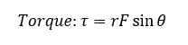
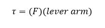
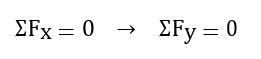
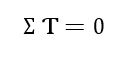
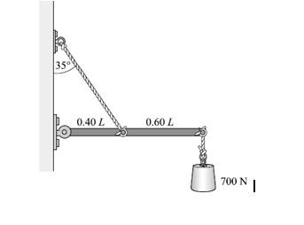
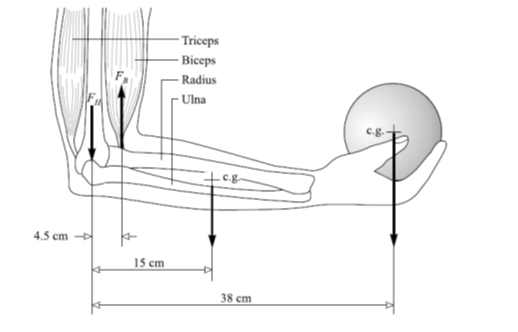
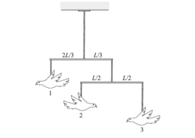

The Torque (or Moment) about an axis, due to a force, is a measure of the effectiveness of the force in producing rotation about that axis.
It is defined in the following way:

Where r is the radial distance from the axis to the point of application of the force, and θ is the acute angle between the lines-of-action of r and F (Figure 1a). Often this definition is written in terms of the lever arm of the force, which is the perpendicular distance from the axis to the line of the force (Fig. 1b). Because the lever arm is simply r sin θ, the torque becomes
The unit of torque is Newton-meters (N m). Plus and minus signs can be assigned to torques; for example, a torque that tends to cause counterclockwise rotation about the axis is positive, whereas one causing clockwise rotation is negative.

Figure 1a
Figure 1b
The two conditions for Equilibrium of a rigid object under the action of coplanar forces are:
1) The first or force condition: The vector sum of all forces acting on the body must be zero.

Where the plane of the coplanar forces is taken to be the xy-plane.
2) The second or torque condition: Take an axis perpendicular to the plane of the coplanar forces. Call the torques that tend to cause clockwise rotation about the axis negative, and counterclockwise torques positive; then the sum of all the torques acting on the object must be zero.

The center of Gravity of an object is the point at which the entire weight of the object may be considered concentrated; i.e., the line-of-action of the weight passes through the center of gravity. A single vertically upward directed force, equal in magnitude to the weight of the object and applied through its center of gravity, will keep the object in equilibrium.
1. The uniform beam shown below weighs 500N and supports a 700N load. Find the tension in the tie rope.

2. The arm shown in the figure supports a 4kg sphere. The mass of the hand and forearm together is 3kg and its weight acts at a point 15 cm from the elbow. Determine the force exerted by the biceps muscle.

3. The mobile shown in figure below hangs at equilibrium. It consists of objects held by vertical strings. Object 3 weighs 1.4N, while each of the identical uniform horizontal bars weighs 0.5N. Find (a) the weights of objects 1 and 2, and (b) the tension in the upper string.

4. I have a 100cm uniform beam with the fulcrum at the 50cm point (its center of gravity). A 100g mass was hung at the 100cm point. (a) At what point on the beam should I place a 200g mass to put the beam into balance? (b) If the fulcrum was now at 75cm but the 100g mass was still able to keep the beam in balance (without the 200g mass), what was the mass of the beam?